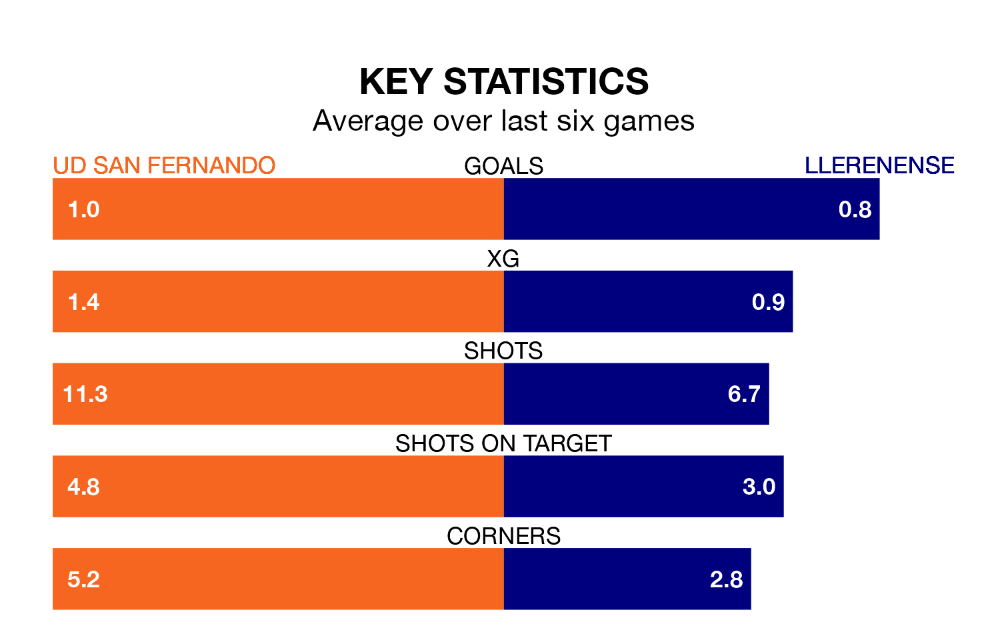

Llerenense travel to UD San Fernando on Sunday lunchtime in the Segunda División RFEF Group 5.
The visitors come into the game on the back of a win in their last match, having beaten Guadalajara 1-0 at home, with a goal from Michael Villajos Expósito.
San Fernando also won their last match, 2-1 against Montijo, with their goals scored by Saúl Sánchez Morales and Juan Alejandro Ojeda Gil.
Llerenense are 13th in the table after 27 games, of which they have won nine and drawn six, earning 33 points.
San Fernando are two places ahead of the visitors in 11th, with nine wins and seven draws putting them on 34 points.
The home team are in reasonable form in the Segunda División RFEF Group 5, with three wins and two draws from their last six games.
With two wins and a draw over that period, Llerenense's form is worse – they have taken seven points from 18, compared to San Fernando's 11.
With 22 goals in 27 games so far this season, San Fernando are the league's joint-third-lowest scorers with 0.8 goals per game. And they are conceding at an average rate, letting in 29 goals at a rate of 1.1 per game.
Llerenense are also below average scorers, with 0.8 goals per game, compared to a league average of 1.1. They have conceded 1.0 goal per game.
Updated: 10:19 (UTC), 22/03/24